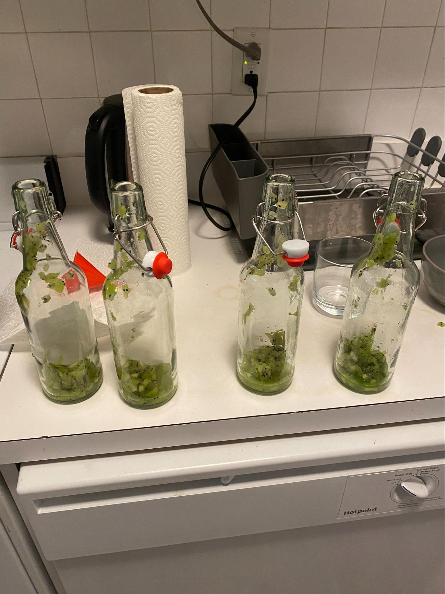

Kombucha Journal
6.25.23
Chopped up about 1 kiwi each. Need to find a better way to get fruit inside the bottles - it's so messy. I may pull out the blender next time.
Post pour! I'm curious how green everything will look in the next couple days.
The first fermentation cycle was about 15 days. Gunning for ten with this one.

Updated look at the gallon jar after the sweet tea pour. The SCOBY is making its way up top.
You can see that there's WAY more liquid in this batch than the prior one. I wonder if I'm pouring enough of the base kombucha out.
6.24.23
Getting ready to pour tomorrow's batch. Checkout a progress pic of the SCOBY. Not only did it float back to the top - there was surface growth independent of the old SCOBY.You can see the two separate entities if you look closely. I'm very curious how the taste of this batch will be affected by the layer pruning.
Attaching a pour video as well. I have to brew the sweet tea overnight to let it get to room temp. The SCOBY will die if it's exposed to boiling water.
Side note: I hate that youtube makes vertical videos “shorts” by default.
6.11.23
I uncorked the kombucha yesterday. The half bottle had way too many blueberries so it was basically just fruit juice.When I uncorked the bottles there was definitely pressure but none of the bottles came close to exploding.
I brought the kombucha over to a party last night to use as a chaser and Evan gave feedback.
Taste Review:
I decided to clean out the gallon jar to address the aggressive “tang”.
I threw away a bunch of the SCOBY layers and stored the top layer inside a tupperware overnight (with two cups of kombucha from the original jar).
This was the first clean that the jar had in about two months. I'm eager to see how this affects the flavor (if at all)
Worth noting that the structural integrity of the SCOBY seems to have been affected by its overnight move. It's currently sinking :(